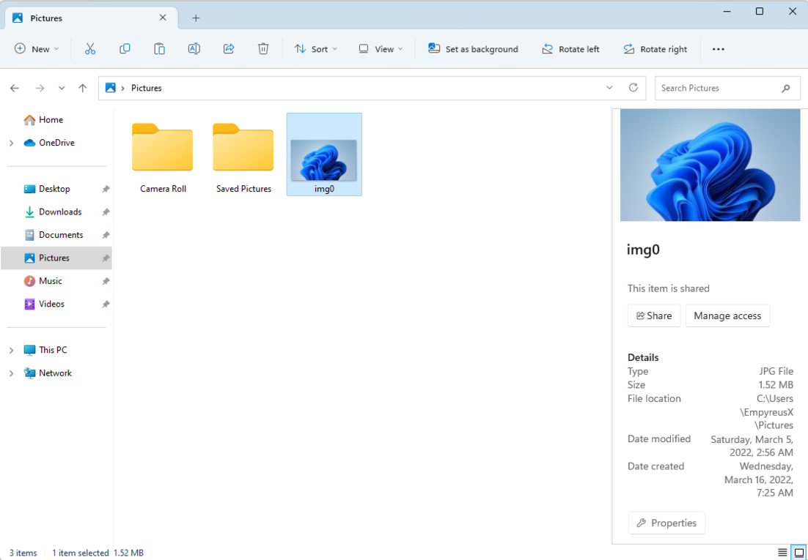
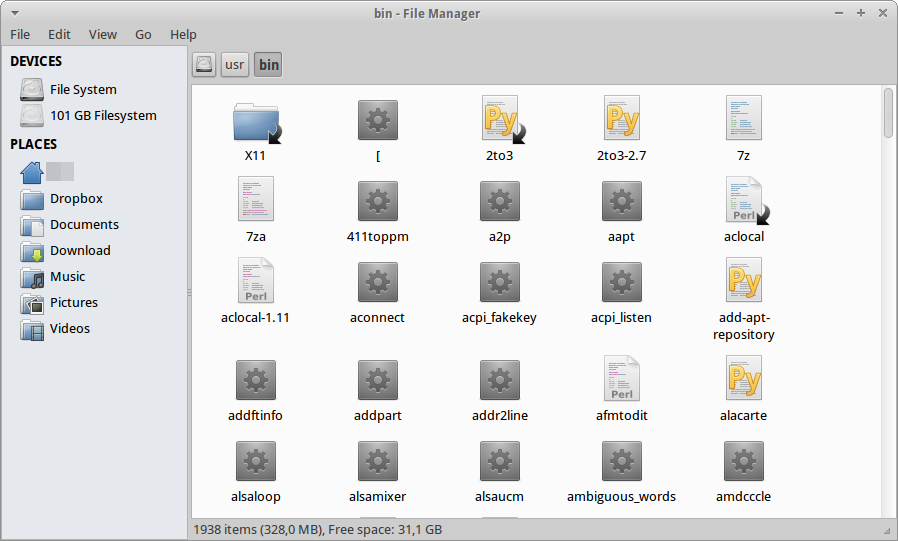

➕
Создавать
Подготовить новый файл или папку. Документ обычно создаётся и сохраняется в соответствующей программе.
Ты уже умеешь открывать окна, переходить по папкам и находить файлы. Теперь пора научиться упорядочивать информацию: создавать, копировать, перемещать, переименовывать и восстанавливать объекты.
На предыдущем уроке мы изучили файловый менеджер, адресную строку и иерархию папок. Папки помогают организовать документы так же, как разделы в школьном портфеле.
Именованная совокупность данных: текст, рисунок, аудиозапись, программа.
Место для организации файлов и других папок. Папки могут быть вложены друг в друга.
Программа для просмотра файловой системы и управления файлами и папками.
Если учебные документы разбросаны по разным папкам, их трудно найти. Названия «Информатика», «Тексты», «Материалы» подсказывают, где искать информацию.
Файловый менеджер позволяет не только просматривать содержимое папок, но и изменять их организацию.
Подготовить новый файл или папку. Документ обычно создаётся и сохраняется в соответствующей программе.
Менять название объекта, не изменяя содержимое файла. Расширение лучше сохранять прежним.
Создавать ещё один экземпляр в другом расположении. Исходный файл остаётся на месте.
Изменять расположение объекта: после переноса его больше нет в старой папке.
Убирать ненужные объекты. При обычном удалении некоторые из них сначала попадают в корзину.
Узнавать имя, тип, размер, расположение и дату изменения объекта.
Пример: в «Документах» создать «Учебный архив», а внутри — «Тексты», «Изображения» и «Материалы».
Например, Заметки.txt
можно назвать Учебные заметки.txt.
В имени Рисунок.png слово «Рисунок» —
основная часть названия, а .png —
расширение, связанное с форматом файла.
Случайное изменение расширения может помешать
системе правильно открыть файл.
Чтобы выполнить одну команду для нескольких файлов, сначала нужно выделить необходимые объекты.
Обычно достаточно одного щелчка мышью по файлу или папке.
В типичных файловых менеджерах: выдели первый, удерживай Shift и выбери последний.
Удерживай Ctrl при выборе нужных объектов. Ctrl + A обычно выделяет всё содержимое.
В учебном файловом менеджере ниже объекты выбираются отдельными нажатиями, поэтому одновременно выделять несколько файлов удобно и без клавиатуры.
Обе операции позволяют разместить объект в другой папке, но результат различается.
Исходный файл остаётся там, где был. В новой папке появляется копия.
Команды: Ctrl + C, затем Ctrl + V.
Файл оказывается в папке назначения, а из исходной папки исчезает.
Команды: Ctrl + X, затем Ctrl + V.
Это временная область, используемая системой для передачи данных между операциями и программами. После «Копировать» или «Вырезать» выполни «Вставить» в нужной папке. Результат перетаскивания мышью может различаться — лучше смотреть, какое действие предлагает файловый менеджер.
При обычном удалении из файлового менеджера объект часто помещается в корзину. Пока он там находится, его можно восстановить через команду «Восстановить».
Важно: не все виды удаления используют корзину. Удаление с некоторых носителей, из отдельных приложений или специальной командой может быть окончательным.
Через свойства можно узнать тип и расширение, размер, путь к файлу, дату изменения и другие сведения. Отображаемые поля зависят от системы и объекта.
Для просмотра свойств обычно используют контекстное меню или отдельную команду файлового менеджера.
Создавай, копируй и удаляй только специально подготовленные учебные файлы. Не меняй неизвестные системные папки или чужие документы. В лаборатории ниже все действия происходят лишь внутри веб-страницы и не затрагивают настоящий диск.
В этой модели можно по-настоящему выполнять действия внутри виртуальной файловой системы: создавать папки и текстовые файлы, переименовывать, выделять несколько объектов, копировать, вырезать, вставлять, удалять в корзину и восстанавливать.
Задания отмечаются автоматически, когда ты выполняешь операции в модели. Это необязательное исследование, которое помогает понять последовательность работы.
Кнопка «Отменить» возвращает предыдущую операцию в этой модели. В настоящем файловом менеджере отмена поддерживается не для всех действий. Если учебный объект попал в корзину, открой корзину и нажми «Восстановить».
Windows использует Проводник, а в Linux доступны разные файловые менеджеры, например Thunar. Кнопки и оформление могут отличаться, но задачи остаются знакомыми: открывать, копировать, перемещать и искать файлы.

Область навигации, содержимое папки, панель команд и сведения о файлах.

Здесь тоже есть список папок, рабочая область, переход по расположениям и команды файловых операций.
Они помогают узнавать знакомые элементы в настоящих программах. Если Интернет недоступен, картинки могут не загрузиться, но схемы, объяснения и виртуальный файловый менеджер продолжат работать без сети.
Все изучают основные операции с файлами и папками. Для закрепления можно добровольно выполнить практическое задание в настоящей операционной системе либо ответить на вопросы после изучения схем и примеров.
При наличии компьютера. Работай только с собственными учебными файлами.
Упорядоченная папка «Учебный архив», в которой ты самостоятельно создал, скопировал, переместил и переименовал учебные объекты.
Полноценный теоретический маршрут, если практическая работа сейчас недоступна.
Используй разделы сайта и учебную модель, чтобы разобраться в последовательности файловых операций. Затем ответь на 12 вопросов следующего раздела.
Объясни своими словами, что получится, если скопировать документ из «Учебного архива» в «Тексты», а затем переместить другой документ в «Материалы». В чём разница?
Особое внимание удели корзине, сохранению расширения файла и выбору нескольких объектов.
Если файл «Заметки.txt» имеется в двух папках, как узнать, это копии или один файл в новом месте? Какие признаки помогут проверить результат?
Ответь на вопросы своими словами. Если что-то забылось, найди нужное объяснение или схему в уроке.
Какие основные операции можно выполнять с файлами и папками?
Как создать новую папку в файловом менеджере?
Чем переименование файла отличается от изменения его содержимого?
Как выделить несколько файлов для выполнения общей операции?
Что называют копированием файла?
Чем копирование отличается от перемещения?
Для чего используется буфер обмена?
Какие сочетания клавиш применяются для копирования, вырезания и вставки?
Что происходит с файлом при обычном удалении в корзину?
Как восстановить случайно удалённый файл, если он находится в корзине?
Какие сведения можно узнать в свойствах файла?
Почему важно правильно организовывать файлы и осторожно выполнять операции с ними?
Теперь ты знаешь, как управлять не только окнами, но и файлами: создавать удобную структуру папок, копировать и перемещать объекты, проверять свойства и восстанавливать некоторые удалённые данные.
Создание папок, понятные имена, вложенные каталоги.
Выделение, копирование, перемещение и переименование.
Корзина, восстановление, проверка результата и забота о файлах.
Уверенная работа с операционной системой начинается с понимания общих принципов. Зная их, ты сможешь ориентироваться в разных файловых менеджерах и поддерживать порядок в цифровых материалах.